Tema 2.2 - Actividades e Intents: la anatomía de una app Android
Hasta ahora tus apps Compose han sido una sola pantalla bonita. En este tema aprendes qué es eso que hay debajo de setContent: la Activity (con su ciclo de vida, que el sistema controla) y los Intents (el correo postal de Android: la única forma legal de que una pantalla hable con otra, o tu app con las 300 apps del móvil).
Deberías saber ya: los fundamentos de Kotlin del apartado 2.1 y los fundamentos de Compose de Desarrollo de Interfaces (Column, Button, estado con remember). Aquí no enseñamos Compose: aquí enseñamos la app que lo aloja.
La app de referencia del tema es FumetoContactos: una libreta de contactos que empieza siendo una pantalla y acaba siendo una app multi-pantalla que llama, comparte fotos y contesta a URLs propias. Todas las capturas están hechas ejecutando ese código en un emulador real.
1. ¿Qué es una Activity?
Una Activity es una pantalla de tu app — pero no "una pantalla" en el sentido de un dibujo: es un objeto con ciclo de vida que el sistema operativo nace, pausa, detiene y mata cuando le da la gana (al girar el móvil, al faltarte memoria, al pulsar el botón de inicio). Tú escribes qué pasa en cada estación; quién decide cuándo es Android.
Toda Activity se declara en el AndroidManifest.xml — el DNI de tu app. El nuestro, tal cual está en el proyecto:
<?xml version="1.0" encoding="utf-8"?>
<manifest xmlns:android="http://schemas.android.com/apk/res/android">
<application // la app entera
android:label="FumetoContactos" // el nombre que ve el usuario
android:icon="@mipmap/ic_launcher" // su icono
android:theme="@style/Theme.MyApplication"> // su tema base
<activity
android:name=".MainActivity" // pantalla 1: la libreta
android:exported="true" // el launcher (de fuera) puede arrancarla
android:windowSoftInputMode="adjustResize"> // el teclado no tapa el formulario
<intent-filter> // POR QUÉ aparece en el cajón
<action android:name="android.intent.action.MAIN" /> <!-- la entrada principal -->
<category android:name="android.intent.category.LAUNCHER" /> <!-- la pinta en el launcher -->
</intent-filter>
</activity>
<activity android:name=".FichaActivity" // pantalla 2: la ficha de un contacto
android:exported="false" /> <!-- solo mi app la abre: no la ve nadie -->
<activity android:name=".FichaWebActivity" // pantalla 3: contesta a mi URL
android:exported="true"> <!-- la abrirá el navegador: de fuera -->
<intent-filter>
<action android:name="android.intent.action.VIEW" /> <!-- "ver esto" -->
<category android:name="android.intent.category.DEFAULT" /> <!-- obligatoria en VIEW -->
<category android:name="android.intent.category.BROWSABLE" /> <!-- desde navegador -->
<data android:scheme="https" android:host="fumeto.dev" /> <!-- mi dominio -->
</intent-filter>
</activity>
</application>
</manifest>
Fíjate en android:exported: exported="true" significa "cualquier app (o el launcher o el navegador) puede lanzar esta Activity"; exported="false" significa "solo yo misma". Es la primera línea de seguridad de tu app: nada que no necesites hacia fuera, expuesto.
El código que pinta esa pantalla de casa (la verás entera y comentada en el apartado 2.3): MainActivity extiende ComponentActivity, y en onCreate llama a setContent { ... } — el punto exacto donde Android le cede el micro a Compose.
2. El ciclo de vida: las siete estaciones
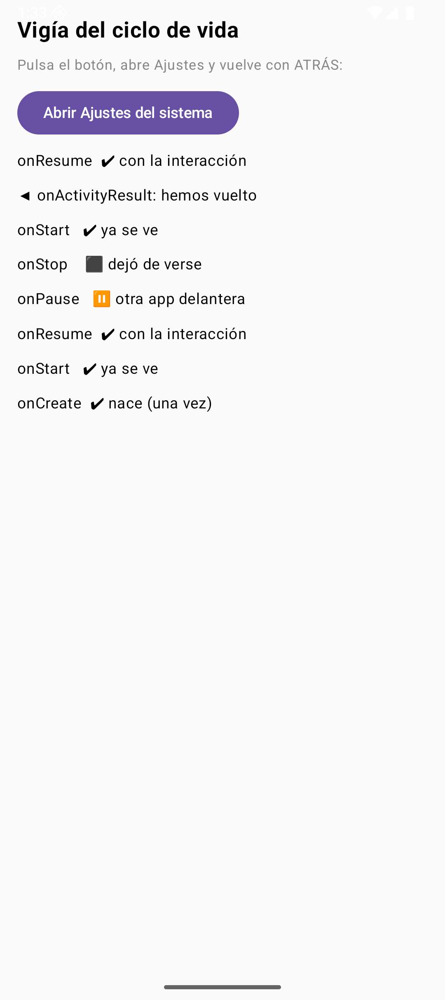
Figura 2. La escena «vigía» anotando el ciclo en vivo: nací (onCreate → onStart → onResume), el usuario abrió Ajustes (onPause → onStop) y volvió con ATRÁS (onRestart → onStart → onResume).
MainActivity no vive a su aire: el sistema la va llamando por teléfono en cada cambio de estado. El orden canónico — y pregunta fija de examen — es:
nace ──▶ onCreate ▶ onStart ▶ onResume ──▶ (interactuando)
al tapar otra app ─▶ onPause ▶ onStop ─ (⚫ en segundo plano)
al volver ─▶ onRestart ▶ onStart ▶ onResume
al morir ─▶ onPause ▶ onStop ▶ onDestroy
| Estación | Qué haces aquí en la vida real |
|---|---|
onCreate |
Inflar UI (setContent), leer extras, crear el estado. Una sola vez por vida de la Activity |
onStart |
Ya es visible: suscribir escuchas de UI, sincronizar datos ligeros |
onResume |
Foco de interacción: arrancar cámara, reanudar animaciones, sonar |
onPause |
Soy interactiva aún pero a medias: parar cámara, silenciar. Rápido: el sistema te espera |
onStop |
Ya no me ven: soltar recursos gordos, guardar borradores |
onDestroy |
Me borran: liberar hasta el的最后 un hilo suelto |
Como en Compose solo escribes onCreate (dentro de setContent), para observar el resto usamos un LifecycleEventObserver enganchado a la Activity:
@Composable
fun EscenaCiclo() { // pantallita que apunta TODO lo del ciclo
val eventos = remember { mutableStateListOf<String>() } // el diario de a bordo
val lanzador = androidx.activity.compose.rememberLauncherForActivityResult(
ActivityResultContracts.StartActivityForResult() // lanzamos y esperamos la vuelta
) { eventos.add("◀ onActivityResult: hemos vuelto") } // al volver se anota
val observador = LifecycleEventObserver { _, ev -> // micro que escucha eventos del ciclo
if (ev.event == Lifecycle.Event.ON_CREATE) eventos.add("onCreate ✔ nace (una vez)")
if (ev.event == Lifecycle.Event.ON_START) eventos.add("onStart ✔ ya se ve")
if (ev.event == Lifecycle.Event.ON_RESUME) eventos.add("onResume ✔ con la interacción")
if (ev.event == Lifecycle.Event.ON_PAUSE) eventos.add("onPause ⏸ otra app delante")
if (ev.event == Lifecycle.Event.ON_STOP) eventos.add("onStop ⬛ dejó de verse")
}
val dueno = LocalLifecycleOwner.current // la actividad que nos aloja
DisposableEffect(dueno) { // suscripción mientras exista el composable
dueno.lifecycle.addObserver(observador) // nos enganchamos al ciclo
onDispose { dueno.lifecycle.removeObserver(observador) } // y nos desenganchamos al morir
}
Column(Modifier.fillMaxSize().padding(16.dp), Arrangement.spacedBy(8.dp)) {
Text("Vigía del ciclo de vida", fontWeight = FontWeight.Bold, fontSize = 20.sp)
Text("Pulsa el botón, abre Ajustes y vuelve con ATRÁS:", color = Color.Gray, fontSize = 13.sp)
Button(onClick = { // intent IMPLÍCITO: quien abra Ajustes da igual
lanzador.launch(Intent(Settings.ACTION_SETTINGS)) // el sistema busca quién responde
}) { Text("Abrir Ajustes del sistema") }
eventos.reversed().forEach { // lo más nuevo arriba
Text(it, fontSize = 14.sp) // cada línea, una estación del ciclo
}
}
}
Practica con esto hasta que lo sientas: abre Ajustes, vuelve, gira el emulador. onPause salta SIEMPRE que pierdes la interacción (diálogo, notificación desplegada); onStop solo si dejas de ser visible. Y recuerda que onDestroy no es una promesa: Android puede matar tu proceso sin avisar desde onStop; todo lo guardable se guarda ANTES de que te pregunten.
3. Sobrevivir a la rotación: remember no es suficiente
Gira el emulador (Ctrl+↑) y miramos qué pasa con dos contadores:
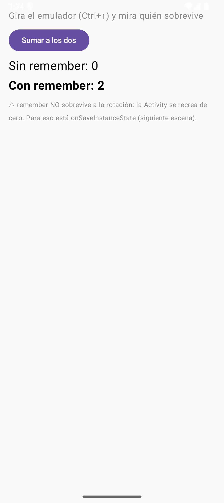
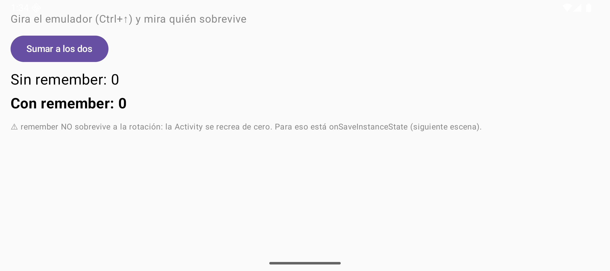
Figura 3. Antes y después de rotar: remember sobrevive a recomposiciones, pero la rotación recrea la Activity entera — y los dos contadores vuelven a nacer a 0.
@Composable
fun EscenaRotador() { // demuestra remember con dos contadores
var sinRecordar by mutableStateOf(0) // SIN remember: nace en cada recomposición
var conRecordar by remember { mutableStateOf(0) } // CON remember: sobrevive a recomposiciones
Column(Modifier.fillMaxSize().padding(16.dp), Arrangement.spacedBy(10.dp)) {
Text("Gira el emulador (Ctrl+↑) y mira quién sobrevive", color = Color.Gray)
Button(onClick = { sinRecordar++; conRecordar++ }) { Text("Sumar a los dos") }
Text("Sin remember: $sinRecordar", fontSize = 22.sp) // se reinicia al girar (se recrea TODO)
Text("Con remember: $conRecordar", fontSize = 22.sp, fontWeight = FontWeight.Bold) // también se recrea…
Text("⚠ remember NO sobrevive a la rotación: la Activity se recrea de cero. " +
"Para eso está onSaveInstanceState (siguiente escena).", fontSize = 12.sp, color = Color.Gray)
}
}
La rotación (o que te coman la memoria) dispara destrucción + creación completa: onDestroy → onCreate. ¿Dónde se guarda lo importante entonces? En el Bundle — un paquetito clave→valor que el sistema te devuelve en el onCreate siguiente:
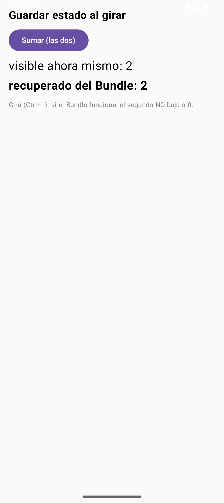
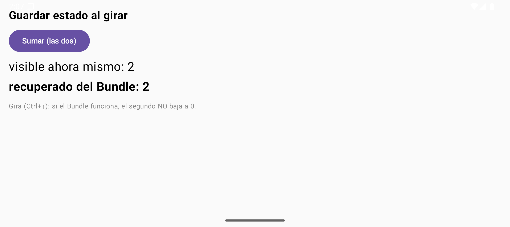
Figura 4. Con onSaveInstanceState: el contador se pierde al girar, pero savedInstanceState nos lo devuelve intacto.
class EscenaGuardaActivity : ComponentActivity() { // Activity dedicada: tiene onSaveInstanceState
private var visitas by mutableStateOf(0) // SE RECREA a cero en cada rotación…
private var guardado = 0 // …pero ESTO lo devuelve el Bundle
companion object { private const val CLAVE = "visitas_guardadas" } // clave del Bundle
override fun onCreate(savedInstanceState: Bundle?) {
super.onCreate(savedInstanceState)
// si el sistema nos devuelve Bundle, es que venimos de una rotación
guardado = savedInstanceState?.getInt(CLAVE) ?: 0 // null = arranque limpio
visitas = guardado // y recuperamos el dato
setContent {
MaterialTheme {
Column(Modifier.fillMaxSize().padding(16.dp), Arrangement.spacedBy(10.dp)) {
Text("Guardar estado al girar", fontWeight = FontWeight.Bold, fontSize = 20.sp)
Button(onClick = { visitas++; guardado++ }) { Text("Sumar (las dos)") }
Text("visible ahora mismo: $visitas", fontSize = 22.sp)
Text("recuperado del Bundle: $guardado", fontSize = 22.sp, fontWeight = FontWeight.Bold)
Text("Gira (Ctrl+↑): si el Bundle funciona, el segundo NO baja a 0.",
fontSize = 12.sp, color = androidx.compose.ui.graphics.Color.Gray)
}
}
}
}
// EL MOMENTO CLAVE: el sistema avisa de que va a matarnos → guardamos lo que importa
override fun onSaveInstanceState(outState: Bundle) { // el Bundle que sube al ático
super.onSaveInstanceState(outState)
outState.putInt(CLAVE, guardado) // solo lo mínimo: no serialices el mundo
}
}
Reglas de oro del estado: el Bundle es para el estado de la INTERFAZ (scroll, texto a medio teclear, un contador) y tiene límite de tamaño (~512 KB en la transacción IPC); los datos de verdad van a disco o a una capa de datos (Room en el tema 3, ViewModel cuando llegue arquitectura). Si alguien te dice "lo guardo todo en el Bundle", pregúntale por una foto de 3 MB.
4. Intents: el correo postal de Android
Un Intent es un objeto que describe una acción — no "abre la pantalla X", sino "quiero VER esta URL", "quiero MANDAR este texto", "quiero la Activity FichaActivity con estos datos". El sistema lo reparte. Sus tres piezas:
| Pieza | Qué es | Ejemplos reales de esta app |
|---|---|---|
| action | El verbo | ACTION_VIEW (ver), ACTION_DIAL (marcar), ACTION_SEND (compartir) |
| data | El dato (URI) | tel:956 12 34 56, content://media/images/42, https://fumeto.dev/ficha/nerea |
| categories | Requisitos | DEFAULT (me vale un respondedor normal), BROWSABLE (desde navegador) |
Y la distinción que hay que tener clara desde el minuto uno: un intent EXPLÍCITO nombra a quién se lo mandas (una clase de Activity tuya); un intent IMPLÍCITO solo describe la acción y deja que el sistema busque quién la sabe hacer.
5. Intent explícito: tu pantalla llama a la tuya
Pulsamos cualquier tarjeta de la lista y MainActivity lanza FichaActivity a dedo, nombrándola:
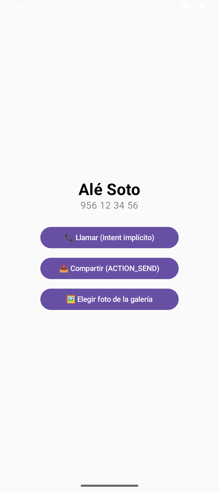
Figura 5. FichaActivity: los datos viajaron dentro del intent como extras (parejas clave→valor) y aquí los leemos y pintamos.
// — EMISOR: en la lista, la tarjeta entera es pulsable —
Card( // tarjeta Material con sombra
modifier = Modifier // el traje de la tarjeta:
.fillMaxWidth() // ancha como la pantalla
.clickable { alAbrir(c) } // y pulsable por TODO: abre la ficha
) { /* fila con nombre, teléfono, switch y papelera (ver 2.3) */ }
// — y en EscenaCasa, el callback que dispara el envío —
alAbrir = { c -> // C5: intent EXPLÍCITO a mi propia Activity
contexto.startActivity( // "quién" lo arreglo yo, sin preguntas
Intent(contexto, FichaActivity::class.java) // destino: clase concreta
.putExtra(FichaActivity.EXTRA_NOMBRE, c.nombre) // extra del nombre
.putExtra(FichaActivity.EXTRA_TELEFONO, c.telefono) // extra del teléfono
)
},
// — RECEPTOR: FichaActivity lee las extras en su onCreate —
val nombre = intent.getStringExtra(EXTRA_NOMBRE) ?: "Desconocido" // null → "Desconocido"
val telefono = intent.getStringExtra(EXTRA_TELEFONO) ?: "sin número"
companion object { // claves públicas: las usa el emisor
const val EXTRA_NOMBRE = "nombre" // string de clave, el de verdad
const val EXTRA_TELEFONO = "telefono" // y el del teléfono
}
Las extras son un Bundle con nombre: viajan tipos primitivos yParcelable (el heredero moderno de Serializable, serializado de verdad); y se leen SIEMPRE con nulabilidad obligada — getStringExtra(...) ?: default — porque si te saltan la Activity a mano con adb, las extras simplemente no están. Compruébalo: adb shell am start -n com.example.fumetocontactos/.FichaActivity → verás la ficha de "Desconocido".
6. Intent implícito: que lo haga quien sepa
FichaActivity tiene tres botones que no saben qué app los responderá:
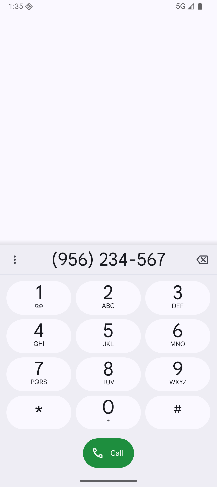
Figura 7. ACTION_DIAL: nuestro intent decía «marcador con este número»; el Dialer del emulador se ofreció y lo abrió. Ojo: DIAL no llama, deja el número escrito — para disparar la llamada hace falta ACTION_CALL… y permiso.
Button(onClick = alLlamar, modifier = Modifier.fillMaxWidth(0.7f)) {
Text("📞 Llamar (intent implícito)") // ACTION_DIAL
}
// …y alLlamar, en el onCreate de FichaActivity:
alLlamar = { // INTENT IMPLÍCITO con dato:
startActivity(Intent(Intent.ACTION_DIAL, Uri.parse("tel:$telefono")))
}, // quien responda (el marcador) decide
Compartir es igual de delegón: construimos el intent, le metemos el texto, y createChooser fuerza nuestro diálogo de elección (sin él, Android recuerda tu última app y ya no te pregunta más, que es una UX muy borde):
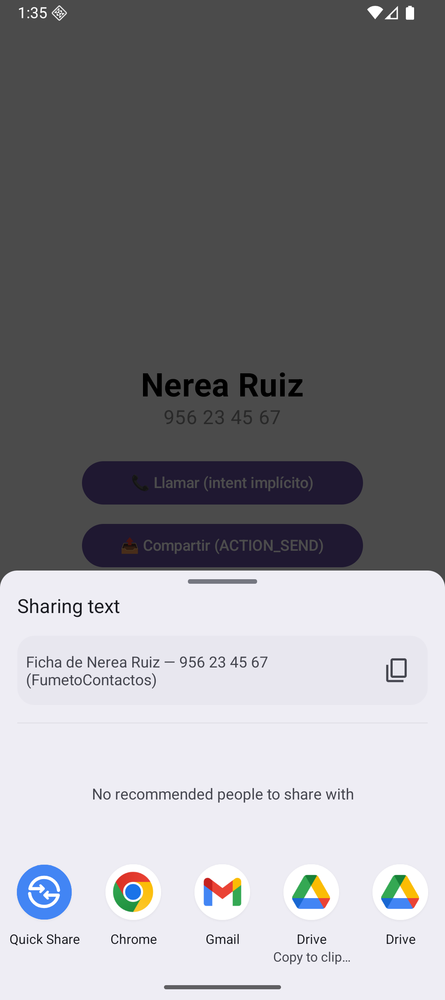
Figura 8. ACTION_SEND + createChooser: el sistema busca quién declara poder recibir text/plain y deja al usuario elegir SIEMPRE.
alCompartir = { // ACTION_SEND: compartimos la ficha
val i = Intent(Intent.ACTION_SEND).apply { // construimos el intent
type = "text/plain" // MIME: texto plano
putExtra(Intent.EXTRA_TEXT, // el contenido a compartir
"Ficha de $nombre — $telefono (FumetoContactos)")
}
startActivity(Intent.createChooser(i, "Compartir ficha con…")) // nuestro chooser
},
El tercero pide una foto a la galería con el lanzador moderno (nada de startActivityForResult a mano):
// en FichaActivity: lanzador registrado ANTES de que la Activity esté creada (así lo exige el ciclo)
private val pickImagen = registerForActivityResult(
ActivityResultContracts.GetContent() // "dame contenido de un fichero"
) { uri -> if (uri != null) rutaFoto = uri } // si no cancela, guardamos el Uri
// el botón:
alGaleria = { pickImagen.launch("image/*") } // "cualquier imagen vale"
// y en el composable Ficha, pintar lo elegido:
if (foto != null) { // si ya hay foto elegida…
Spacer(Modifier.height(16.dp))
val ctx = androidx.compose.ui.platform.LocalContext.current // el Context real de la pantalla
val bitmap = remember(foto) { // la decodificamos UNA vez por Uri
ctx.contentResolver.openInputStream(foto)?.use { input -> // abrimos el content://
BitmapFactory.decodeStream(input) // stream → Bitmap
}
}
bitmap?.let { // si se pudo leer:
Image( // la pintamos en Compose
bitmap = it.asImageBitmap(), // Bitmap del sistema → ImageBitmap
contentDescription = "Foto de $nombre", // accesibilidad: qué es la imagen
modifier = Modifier.size(180.dp) // tamaño fijo, cuadradita
)
}
}
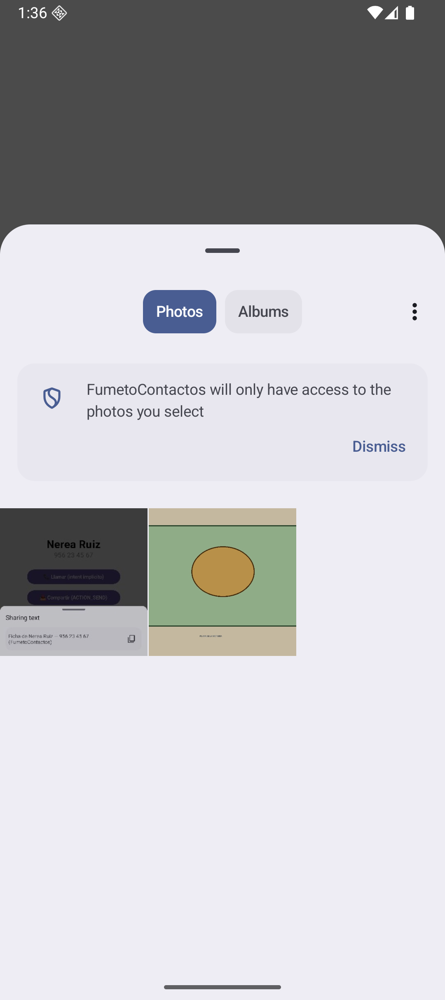
Figura 10. El selector del sistema con nuestra playa de prueba en DCIM. Con GetContent no hacen falta permisos: préstamo de acceso puntual sobre ESE fichero — la filosofía de Android en miniatura.
7. Intent filter: cuando el mundo te llama a ti
Hasta aquí nosotros llamábamos. Un <intent-filter> es publicarse en las páginas amarillas del móvil: "si alguien quiere VIEW esta URL, aquí tiene quién". Nuestra FichaWebActivity se apunta a https://fumeto.dev:
class FichaWebActivity : ComponentActivity() { // registrada en el Manifest con intent-filter
override fun onCreate(savedInstanceState: Bundle?) {
super.onCreate(savedInstanceState)
val uri = intent.data // la URL que nos trajeron: https://fumeto.dev/…
val secciones = uri?.pathSegments ?: listOf("(sin ruta)") // /ficha/nerea → [ficha, nerea]
setContent {
MaterialTheme {
Surface(Modifier.fillMaxSize()) { // superficie Material vacía
Column(Modifier.padding(20.dp), Arrangement.spacedBy(8.dp)) {
Text("🌐 ¡Me han abierto con una URL!", fontWeight = FontWeight.Bold, fontSize = 20.sp)
Text("URL recibida: $uri", fontSize = 14.sp) // tal cual
Text("Ruta interpretada:", color = androidx.compose.ui.graphics.Color.Gray, fontSize = 13.sp)
secciones.forEachIndexed { i, s -> // segmento a segmento
Text(" segmento $i → $s", fontSize = 14.sp) // cada trozo de la ruta
}
Text("Este lo contesta SOLO mi app: lo dice mi intent-filter.",
fontSize = 12.sp, color = androidx.compose.ui.graphics.Color(0xFF008248))
}
}
}
}
}
}
Tres verdades del filtro: un filtro coincide si la action, las categories y el data del intent encajan TODOS; la categoría DEFAULT es obligatoria en filtros que no sean MAIN/LAUNCHER (sin ella tu app aparece en la lista pero nadie puede lanzarla); y dos apps con el mismo filtro pelean con un chooser — por eso tu dominio (o App Links verificados, tema 4) es tu territorio.
8. PendingIntent: un intent con reserva
A veces quien dispara el intent no eres tú: es el sistema, minutos después, cuando el usuario toca tu notificación. No puedes pasarle un Intent cualquiera (lo manejaría otro proceso con tus permisos… peligroso); le pasas un PendingIntent: "cuando toque, ejecuta ESTO, y con mi identidad".
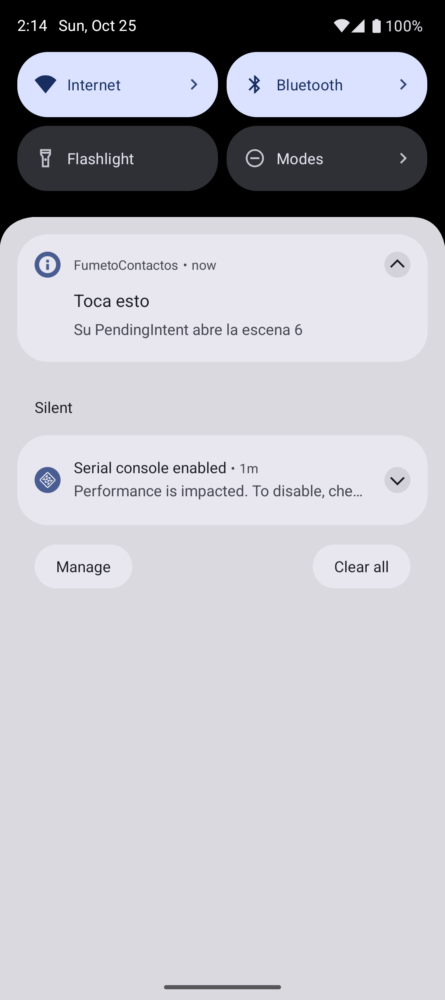
Figura 12. La escena 5 crea canal, notifica con id 42 y su setContentIntent(tap): al tocar, el sistema dispara nuestro getActivity (y la notificación se auto-quita).
val notificar = { // lambda con todo el ritual de notificar
val nm = contexto.getSystemService(NotificationManager::class.java) // el sistema de notifs
val canal = NotificationChannel("fumeto_tap", // id del canal (el que sea, estable)
"Canal Fumeto", // nombre que ve el usuario en Ajustes
NotificationManager.IMPORTANCE_DEFAULT) // importancia: silbato normal
nm.createNotificationChannel(canal) // idempotente: crearlo cada vez no molesta
val destino = Intent(contexto, MainActivity::class.java) // qué abrirá al tocar
.putExtra("escena", 6) // escena 6 = la pantalla de "te hemos traído"
.addFlags(Intent.FLAG_ACTIVITY_CLEAR_TOP) // si ya existía, traemos su pila arriba
// el PendingIntent: "este intent lo disparará OTRO (el sistema al tocar)"
val tap = PendingIntent.getActivity( // getActivity = abrirá una Activity
contexto, 0, // contexto + código de petición
destino, // el intent a disparar
PendingIntent.FLAG_UPDATE_CURRENT or PendingIntent.FLAG_IMMUTABLE) // actualiza y no deja que otro lo mutile
nm.notify(42, NotificationCompat.Builder(contexto, "fumeto_tap") // id 42: re-notify = reemplaza
.setSmallIcon(android.R.drawable.ic_dialog_info) // iconito blanco del sistema
.setContentTitle("Toca esto") // línea gruesa
.setContentText("Su PendingIntent abre la escena 6") // línea fina
.setContentIntent(tap) // ⭐ su PendingIntent
.setAutoCancel(true) // al tocar, se quita sola
.build()) // a la calle
Unit
}
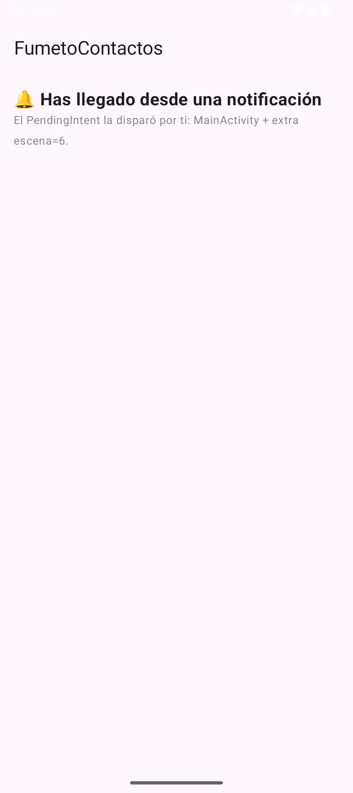
Figura 13. El destino del PendingIntent: MainActivity con la extra escena=6. La notificación fue el mensajero; el intent lo ejecutó el sistema.
Desde Android 12 los PendingIntent son FLAG_IMMUTABLE por defecto obligatorio: sin esa flag el emisor pierde el derecho de decir quién puede modificar el intent, y un receptor malicioso podría reescribirlo. Y desde Android 13, notificar exige el permiso runtime POST_NOTIFICATIONS — lo pediremos de verdad cuando montemos notificaciones de verdad (práctica 2.3).
9. Autoevaluación
[!] Pregunta 1 — Ordena las estaciones que se saltan al abrir un diálogo transparente encima de tu Activity.
[!answer] Solo
onPause(sigues visible → no hayonStop). Al cerrarse el diálogo: directoonResume.[!] Pregunta 2 — Rotas con 400 KB de texto en el Bundle y una foto de 4 MB en otra extra. ¿Qué revienta y por qué?
[!answer] La foto: el Bundle viaja por una transacción IPC (~512 KB de tope) →
TransactionTooLargeException(o la app muere). El texto de 400 KB pasa justito: el Bundle es para estado de UI, no para datos.[!] Pregunta 3 — ¿Qué dos cosas le faltan a este filtro para que tu app aparezca como opción del navegador?
<intent-filter><action android:name="android.intent.action.VIEW"/><data android:scheme="https"/></intent-filter>[!answer] Las categorías
DEFAULTyBROWSABLE(y si quieres ser LA opción sin chooser, verificar el dominio con App Links:assetlinks.jsonservido por ti).[!] Pregunta 4 — ¿Por qué un
PendingIntenty no unIntenta secas en una notificación?[!answer] Porque lo va a disparar OTRO proceso (system_server) en otro momento: el PendingIntent congela acción, datos e identidad del emisor, y la flag
IMMUTABLEimpide que el receptor lo deforme.[!] Pregunta 5 — Tu compañero lanza
FichaActivitycon adb sin extras y peta al leer `getStringExtra("nombre")!!.¿Por qué y con qué se arregla?[!answer] Porque las extras no garantizadas llegan null y el
!!convierte el null en excepción. Con nulabilidad en el sitio de lectura:?: "Desconocido"— tal como hacemos en el Código 5.
Materiales: Documentación oficial de Activities · Referencia de Intents y filtros · Presentación: diapositivas del tema 2.2 · Siguiente: 2.3 — La app Compose: Scaffold, listas Lazy y formulario